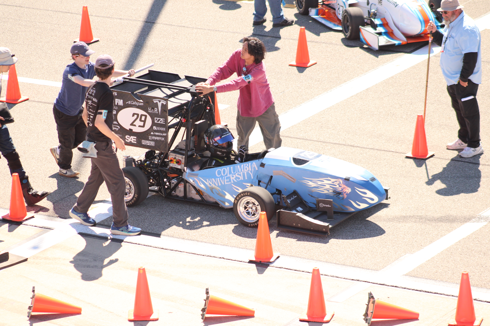
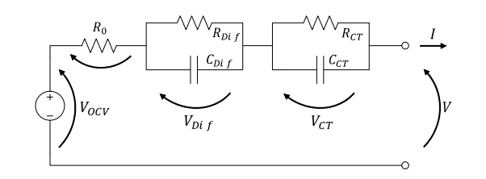
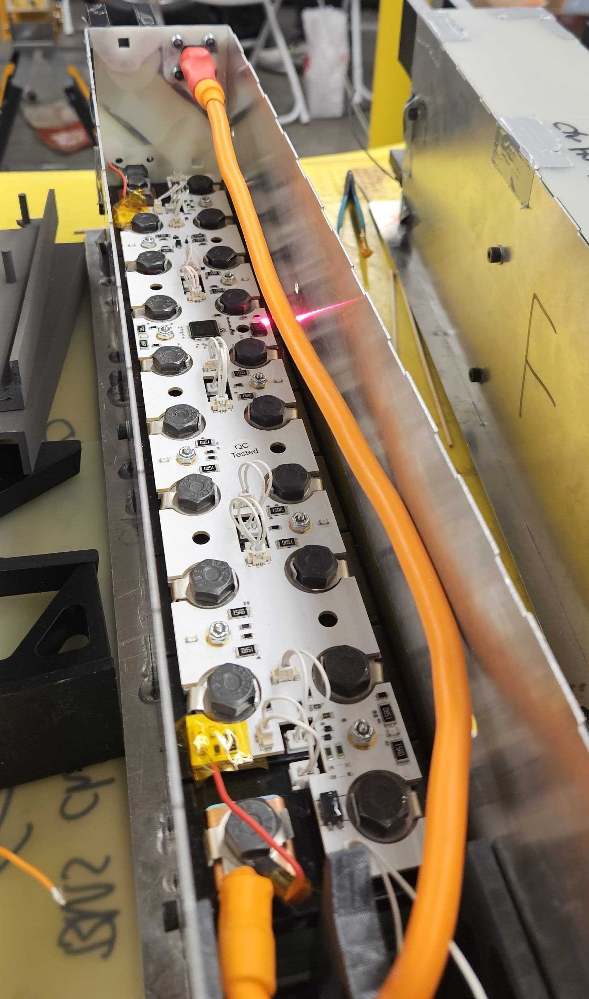
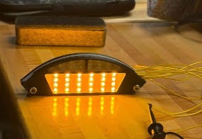
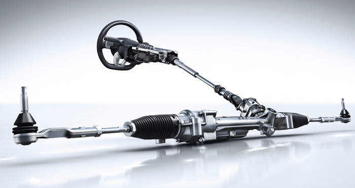
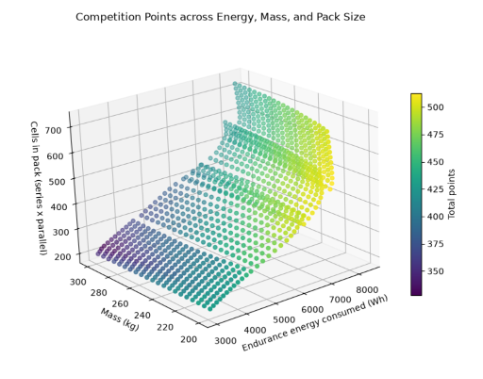
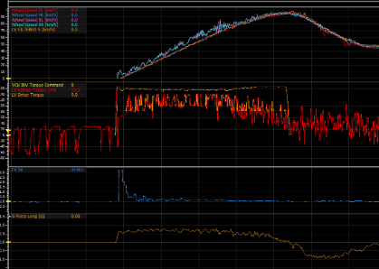
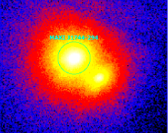

Using physics
to build
what's new.
Undergraduate physics student working at the intersection of theory, software, and hardware — state estimation, embedded firmware, and vehicle modeling.
Hi, I am an undergraduate student at Columbia University in the City of New York. As a physics major, I am passionate about using my physics background toward applied software engineering projects, including controls, firmware, hardware development, simulation, and data analysis, as well as cutting-edge work in other disciplines such as high-energy astrophysics.
Currently, I am working on the complete low-voltage system for the Formula SAE electric vehicle I work on, bringing together all low-voltage electronics, data acquisition, the wiring harness, and all software components of the car. I am developing robust embedded real-time operating systems to handle battery management and sensor management, and extending our understanding of batteries through higher-order modeling, incorporating thermal analysis and developing vehicle-dynamics-based control and state estimation.
On the side, I am an avid classical double bass player and amateur conductor in a wide variety of school and student-led ensembles. I am also a frequent cook, preparing elaborate dinners and creative dishes for my friends.
— August 2026
- Developed complete end-to-end testing infrastructure for vehicle-level analysis of driver-assist systems and their interactions with the core vehicle
- Created novel solutions for vehicle-dynamics plant models to build out extensive software-in-the-loop analysis
— present
- Designed and led all on-vehicle control systems, including torque control, traction control, brake systems, vehicle states, and fault circuits
- Developed core vehicle modeling (empirical brush tires, motor, drivetrain, and batteries) and led point-mass, two-track, inverter-controller, and other simulations to inform vehicle code design, parameter studies, and physical design changes
- Created and managed high-voltage battery and charging firmware along with embedded vehicle systems including CAN and RS232 communications, data storage, and integration with all high- and low-voltage electrical systems
- Designed and architected the complete low-voltage system including wiring harness, electronics, microcontrollers, driver interfaces, data acquisition, torque control, and safety-critical systems
— present
- Holds MATLAB learning events, promotes MathWorks to student clubs, and communicates with professors to answer MathWorks questions
— present
- Analyzed wavelet and Voronoi tessellation algorithms for use in galactic-center point-source localization of unstudied Chandra data
- Conducted spectral analysis and chi-squared model fitting on a new galactic-center transient, including background-contamination analysis
- Designed a custom pipeline using novel statistical methods to analyze 20+ years of XMM-Newton observed point sources

- Single-motor traction control uses open-loop control based on vertical tire load and friction, plus closed-loop control based on slip error
- Uses a forward-speed Kalman filter with front wheel speeds and acceleration to estimate forward speed
- Employs a semi-empirical brush tire model fit to real tire data, acting as a lookup to translate input forces to ideal slip and estimated friction coefficient

- Li-ion cell characterization using second-order model fitting and high-power pulse characterization testing
- State-of-charge estimation implements a second-order lumped-element model in an extended Kalman filter with dual parameter estimation for internal resistance and capacity
- Used in vehicle-level modeling and battery-pack sizing, with comparison to competition data and for pack-level MATLAB thermal modeling
- Real-time application in the battery management system with simplified operation for fast calculations

- Real-time operating system with task management, queues, buffers, and mutexing
- Various peripherals including CAN, ADCs, GPIO, SPI, and I2C
- State machines controlling battery precharge, discharge, isolation relays, and ready-to-drive modes
- Battery management system data collection and fault checking

- Custom status-indicator and ready-to-move light PCB designed to meet required minimum luminance
- Transient protection and adjustable brightness in a small form factor to reduce drag and weight on the vehicle
- Conducted automotive-grade testing on the light to meet competition and FMVSS standards

- Developed the full electronic power steering simulation and plant model for vehicle-level software-in-the-loop simulation, designed to interface with existing vehicle simulations
- Designed the model to support driver-in-the-loop, allowing interaction between the "driver" and steering-assist systems
- Accounts for the full effects of all system components and models them cleanly for maximum efficiency
- Enabled the creation of 50+ unique tests to validate lateral control systems in simulation

- Developed point-mass lap-time simulations, including time- and state-dependent battery simulations, fitting a speed profile to competition tracks constrained by tire characteristics, load transfer, and motor dynamics — enabling a 40% increase in battery pack capacity
- Designed full vehicle simulations using a Simulink 3-DOF vehicle model, a custom empirical-brush tire model, and a PMSM electric motor model to test real-time controls and spec vehicle designs such as drive ratio

- Configures and organizes all data acquisition with MoTeC and i2 telemetry tools, including management of the full CAN bus system, analog, and sensors — touching over 300 unique signals
- Analyzes results including coast-down analysis and curve fitting for vehicle transfer-function modeling and motor-control tuning
- Uses real data for testing software components in the loop for better accuracy during real-time testing

- Constructed a novel X-ray point-source grouping pipeline for high-energy galactic-center sources with few photon counts
- Pipeline employs custom k-means clustering, contour mapping, sigma clipping, and luminosity and flux constraints
- Uses a novel energy-quanta-based approach to avoid the photon-count limitations of hardness ratio
- Grouped ~30,000 sources into <800 groups for far easier analysis with a custom spectral-stacking pipeline